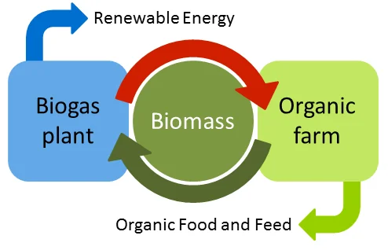

The hydrologic cycle describes the movement of water in nature. Man intervenes in the hydrologic cycle, generating man-made water cycles. All this while many don't realise the effects and threats posed on the limited freshwater - surface and ground - that is available for all of us. Sepcon Systems provides custom turnkey solutions and systems to suit your application requirements.

WATER TREATMENT
Fresh water is utilised for a plethora of applications of potable as well as industrial uses. Its quality and characteristics are critical and various factors of natural but mostly man-made types affect those parameters. Direct and indirect sources of contaminants include:
Based on the contaminants present, Sepcon Systems integrates appropriate technologies and equipment to produce the water of required quality.
- Unregulated effluent outfalls of varying quality discharged directly into urban water supplies
- Contaminants entering the water supply from soil and from the atmosphere via rain water
- Residue of human agricultural practices and improperly disposed industrial wastes
- Atmospheric contaminants derived from gaseous emissions of human practices
Based on the contaminants present, Sepcon Systems integrates appropriate technologies and equipment to produce the water of required quality.
Applications:
Potable use of water
is one that is most essential. WHO and Governmental organizations have set standards for drinking water. But, most sources of drinking water don’t meet the standards. Contamination can be of chemical and biological types from sources that are direct and indirect.
Industrial Processes require water of specific characteristics and this ranges from use of water that meets accepted basic standards right up to usage of ultra pure water for industries such as pharmaceuticals, electronics, plating and so on. Equipments such as heat exchangers, boilers, chillers, cooling towers also need water free of suspended solids, low hardness and low TDS levels. As various applications require various qualities of water even within the same production unit, process water treatment units play a very prominent role in the production cycle.
Industrial Processes require water of specific characteristics and this ranges from use of water that meets accepted basic standards right up to usage of ultra pure water for industries such as pharmaceuticals, electronics, plating and so on. Equipments such as heat exchangers, boilers, chillers, cooling towers also need water free of suspended solids, low hardness and low TDS levels. As various applications require various qualities of water even within the same production unit, process water treatment units play a very prominent role in the production cycle.
What we offer:
Sepcon Systems provides turnkey end to end industrial process water treatment and drinking water treatment and distribution solutions. While our team has built an in-depth understanding of the manufacturing process of the various industrial segments, it has also studied the potable water requirements of communities, villages, towns, residential and commercial needs. We offer water treatment plants that are engineered to have optimised foot print, guaranteed quality output and minimum downtime.
Sepcon Systems implements a variety of physicochemical processes using leading technologies to obtain quality drinking, process water and ultra pure water by offering systems for:
Systems and solutions are installed with online monitoring instruments, flow totalizers & automation tools and accessories for monitoring, data collection and system integration.
Proceed to know more about our Systems and Products that we offer to meet potable and industrial process water needs.
Sepcon Systems implements a variety of physicochemical processes using leading technologies to obtain quality drinking, process water and ultra pure water by offering systems for:
- Removal of Inorganic matter such as ammonium, iron, manganese, nitrates, fluorides, sulphates, arsenic etc.
- Removal of Organic pollutants like chlorinated hydrocarbons, DOC, chemicals of pesticides, etc.
- Hardness removal and Softening
- De-mineralisation and multi bed mineralisation
- Electro de-ionization and Ion Exchange
- Nano-filtration and Ultra-filtration
- Reverse osmosis treatment
- Disinfection of water to treat microbiological contaminants
- Acidity control and pH correction
- Oxygenation and Carbon Dioxide removal and scale mitigation
- Ultra-pure water treatment systems
- Swimming Pools and recreational water body treatment and recirculation plants.
Systems and solutions are installed with online monitoring instruments, flow totalizers & automation tools and accessories for monitoring, data collection and system integration.
Proceed to know more about our Systems and Products that we offer to meet potable and industrial process water needs.
Waste Water Treatment
Wastewater is produced from domestic, commercial, municipal and industrial use of water. Water is both an ingredient and an accessory in these uses. The produced wastewater varies in characteristics depending upon the water use application. In India, the single biggest contributor to water pollution is the untreated and unregulated sewage and process wastewater discharge.
The effects of unregulated discharge of polluted water are varied. They include poisonous drinking water, poisonous food - plants & animals(because having bio-accumulated toxins from the environment over their life spans), unbalanced river and lake ecosystems that can no longer support full biological diversity, deforestation from acid rain, and many other effects. These effects are specific to the type of contaminants present.
Sepcon Systems leverages its expertise to provide optimised waste water treatment and management infrastructure and solutions.
The effects of unregulated discharge of polluted water are varied. They include poisonous drinking water, poisonous food - plants & animals(because having bio-accumulated toxins from the environment over their life spans), unbalanced river and lake ecosystems that can no longer support full biological diversity, deforestation from acid rain, and many other effects. These effects are specific to the type of contaminants present.
Sepcon Systems leverages its expertise to provide optimised waste water treatment and management infrastructure and solutions.
Applications:
Effluents
from industries are highly polluting. Industries are a major consumer of water. While with depleting water resources they are getting more concerned for the environment, they are also redesigning their production processes to focus on treatment of effluents and the reuse of recycled water. More water is being treated and reused numerous times before partial discharge or near zero discharge.
Sewage is output from daily domestic, industrial and commercial human usage. As population and urbanization is increasing at a rapid rate governments all over the world are insisting apart from municipal plants, on decentralized sewage treatment plants for individual communities, resorts, hotels, hostels, residential and commercial complexes. Treated sewage water is reused for various secondary applications like flushing, gardening, ground water replenishment. There are a host of technologies and options available for treating sewage.
Sewage is output from daily domestic, industrial and commercial human usage. As population and urbanization is increasing at a rapid rate governments all over the world are insisting apart from municipal plants, on decentralized sewage treatment plants for individual communities, resorts, hotels, hostels, residential and commercial complexes. Treated sewage water is reused for various secondary applications like flushing, gardening, ground water replenishment. There are a host of technologies and options available for treating sewage.
What we offer:
Sepcon Systems uses the latest technologies to provide turnkey solutions as well as establishing EPC contracting projects utilising processes ranging from physicochemical processes to bio-technological processes which include various microbial actions, membrane and media based filtration and other advances methods of purification to treat and harness the potential of wastewater. The potential lies with the efficient reuse for industrial production with ZLD(zero liquid discharge) or to replenish the water table or to rejuvenate water bodies and most importantly provide environment friendly discharge of the effluents.
At Sepcon Systems we understand the need to optimise and engineer projects based on the site conditions, budget and end use of water and while meeting these demands we provide systems for:
Systems and solutions are installed with online monitoring instruments, flow totalizers & automation tools and accessories for monitoring, data collection and system integration.
Proceed to know more about our Systems and Products that we offer to treat, reuse and recycle wastewater.
At Sepcon Systems we understand the need to optimise and engineer projects based on the site conditions, budget and end use of water and while meeting these demands we provide systems for:
- Elimination of minerals, organic particles, partly colloidal solids, nutrients of refractive organic substances , toxic chemicals and other impurities
- Pre treatment by Oil Interceptors, Emulsion Breaking Systems, Bar Screens, Clarification, Coagulation and Chemical stabilization.
- Bio Remediation of water by aeration in Batch reactors or continuous reactors with Conventional Activated Sludge Process and advanced processes like Sequential Batch Reaction, Moving Bed Bio-Reaction
- Anaerobic treatment such as UASB, Hybrid UASBR. Nitrification and de-nitrification by anoxic treatments.
- Advanced Membrane filtration technologies using MBR, Reverse Osmosis, Ultra-filtration, and Nano-filtration units to reduce suspended solids in water, remove colloidal silica and also eliminate viruses and bacteria.
- Clarification post bioremediation using membrane bio reactors, clarifiers, tube settlers. Flocculation , Settling and Flotation methods.
- Polishing and Tertiary treatment Systems for wastewater reuse and recycle and water reclamation using Pressure Sand Filters, Activated Carbon Filters, Dual Media Filters etc.
- Disinfection by using Electro Chlorinators, Ozone Generators, chemical treatment, etc.
- Chemical and biological Sludge treatment, sludge minimization and sludge handling such as Filter Press, Bag Filters, Decanter centrifuges, Sludge drying beds, Belt Press etc.
- Chemical transfer, storage and supply.
- Alternate treatment of water that cannot be economically treated like Evaporators, Driers etc.
- Packaged Treatment Plants, which are compact and skid mounted to suit flow capacities ranging from 10,000 Litres per day to 500,000 Litres per day.
Systems and solutions are installed with online monitoring instruments, flow totalizers & automation tools and accessories for monitoring, data collection and system integration.
Proceed to know more about our Systems and Products that we offer to treat, reuse and recycle wastewater.

RENEWABLE ENERGY - BIOGAS
Biogas is produced by fermenting biomass. As a gaseous mixture containing methane, biogas serves as a renewable and versatile raw material for generating electricity, heat and fuel, thus vitally contributing to a safe and environmentally compatible energy supply. Biogas can be stored or can be fed into the natural gas grid and is therefore extremely flexible. Biogas is produced by microorganisms when they decompose plants, manure or slurry. Biogas is also generated at wastewater treatment plants and waste disposal sites.
Sepcon Systems provides turnkey solutions for design and execution of Biogas plants which can produce electricity and heat from decomposition of organic material as well as customised to produce energy from waste. For use as an energy source, biogas is generally converted into electrical and thermal energy in cogeneration plants (CHP units). The heat generated can be used to heat buildings, for example. Thus, the energy is used twice and in a particularly efficient manner.
Electrical and thermal energy produced by biogas plants is especially climate-friendly because the amount of carbon dioxide (CO2) produced during biogas production is more or less equal to the amount absorbed by the energy crops during growth or the amount which escapes as waste decays. In the process, the biogas plant contributes to an annual CO2 savings and in addition, the costs for disposal of the waste have been eliminated. The by-products from fermentation residues produced from these plants are highly nutrient-rich for the use as fertilisers.
Sepcon Systems provides turnkey solutions for design and execution of Biogas plants which can produce electricity and heat from decomposition of organic material as well as customised to produce energy from waste. For use as an energy source, biogas is generally converted into electrical and thermal energy in cogeneration plants (CHP units). The heat generated can be used to heat buildings, for example. Thus, the energy is used twice and in a particularly efficient manner.
Electrical and thermal energy produced by biogas plants is especially climate-friendly because the amount of carbon dioxide (CO2) produced during biogas production is more or less equal to the amount absorbed by the energy crops during growth or the amount which escapes as waste decays. In the process, the biogas plant contributes to an annual CO2 savings and in addition, the costs for disposal of the waste have been eliminated. The by-products from fermentation residues produced from these plants are highly nutrient-rich for the use as fertilisers.
{kind=link}